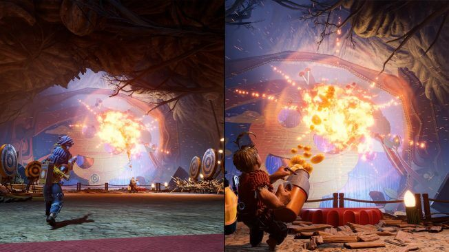
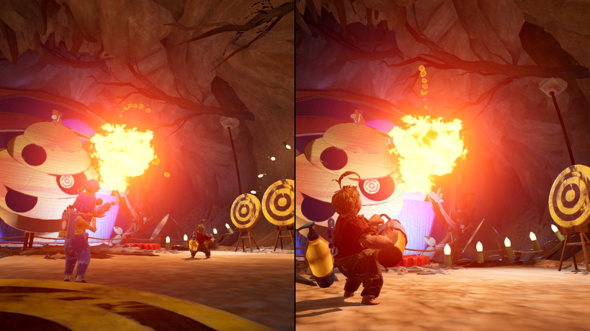
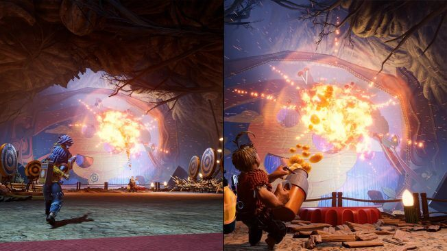
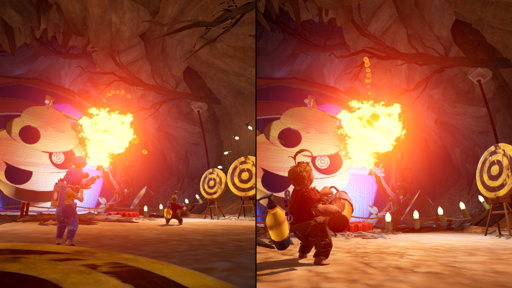

Información Basica
It takes Two ha tomado a todo el mundo por sorpresa y ha arrasado completamente desde su lanzamiento en marzo de 2021. Ganador de tres premios al (juego del año, mejor juego multijugador y mejor juego familiar) durante los Game Awards de ese mismo año. Incluso hace poco se supo que tendrá su propia película adaptada por los mismos creadores de Sonic: The Hedgehog. Si todo sale bien, It Takes Two se convertirá en el primer videojuego de la historia en tener su adaptación al cine en menos de 3 años desde su estreno.
Es también importante destacar que sus mecánicas son extremadamente divertidas, requieren una constante cooperación para poder superar los desafíos y mantienen a los jugadores al pendiente de cada cosa que pasa durante la aventura.